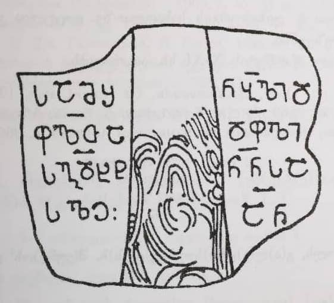

ღუმურიში, საგდუხტ დეოფალთა დეოფლის წარწერა
შინაარსი / Summary
საამშენებლო
კრიტიკული გამოცემა Interpretive Edition
✝ ღმერთო, შეიწყალე ორთავე
ცხორებასა შინა ამის ტაძრისა
მ(ა)შ(ე)ნ(ე)ბ(ე)ლი დ(ეო)ფ(ა)ლთა
დ(ეო)ფ(ა)ლ ს(ა)გდ(უ)ხტ ნ(ია)ნ(ი)ს(ა) ას(უ)ლი ა(მე)ნ
დიპლომატიური გამოცემა Diplomatic Edition
✝ ႶႫႤႰႧႭ, ႸႤႨႼႷႠႪႤ ႭႰႧႠႥႤ
ႺႾႭႰႤႡႠႱႠ ႸႨႬႠ ႠႫႨႱ ႲႠႻႰႨႱႠ
ႫႸႬႡႪႨ ႣႴႪႧႠ
ႣႴႪ ႱႢႣႾႲ ႬႬႱ ႠႱႪႨ ႠႬ

საგდუხტ დეოფალთა დეოფლის წარწერა
{'ka': 'ღმერთო, შეიწყალე ორივე ცხოვრებაში ამ ტაძრის ამშენებელი დეოფალთა დეოფალი საგდუხტი, ნიანიას ასული, ამინ'}
{'default': 'კირქვის ფილაზე გამოსახული ყოფილა რელიეფური ორნამენტირებული ჯვარი, რომლის ზედა და განივი მკლავები მომტვრეულია; დღეს სახეზეა ჯვრის ქვედა მკლავი. ფორმულა"ორთავე ცხორებასა შინა" პირობითია. რადგანაც ჩვენ არ ვიცით, რა სიდიდის ტექსტი აკლია წარწერას დასაწყისში, შეიძლება დავუშვათ, რომ ის არც იყო. აღდგენის ვარიანტი: ["ეკლესიი]სა", ["საყრდი]სა". როგორც აღინიშნა, წარწერა ამოკვეთილია ფილაზე, რომელზედაც რელიეფური ჯვარი იყო გამოსახული. ამიტომ შეიძლება დავუშვათ, რომ წარწერაში ჯვრის აღმართვის შესახებ იყო აღნიშნული და მისი ნაკლული ტექსტი შეიძლება ასეც აღვადგინოთ: [ღ(მერთ)ო, შ(ეიწყალ)ე ამ(ი)ს ჯ(უა)რი]სა მ(ა)შ(ე)ნ(ე)ბ(ე)ლი და ა.შ.'}
<div type="edition" xml:lang="ka" ana="mtavruli" xml:space="preserve">
<ab>
<lb n="1"/><w lemma="ქრისტე"><expan><abbr>ქ</abbr><ex>რისტ</ex><abbr>ე</abbr></expan></w>
<w lemma="განსუენება"><expan><abbr>გა</abbr><ex>ნ</ex><abbr>ო</abbr><ex>ჳ</ex><abbr>ს</abbr><ex>უ</ex><abbr>ენე</abbr></expan></w>
<w lemma="სულ">სოჳ<lb n="2" break="no"/>ლსა</w>
<name nymRef="ვაჩა">ვაჩაჲს<lb n="3" break="no"/>ასა</name>
<name nymRef="გურა"><expan><abbr>გო</abbr><ex>ჳ</ex><abbr>რაჲ<lb n="4" break="no"/>სასა</abbr></expan></name>
<name nymRef="მირა"><expan><abbr>მ</abbr><ex>ი</ex><abbr>რა</abbr><ex>ჲ</ex><abbr>ს</abbr><ex>ა</ex><abbr>ს</abbr><ex>ა</ex></expan></name>
</ab>
</div>